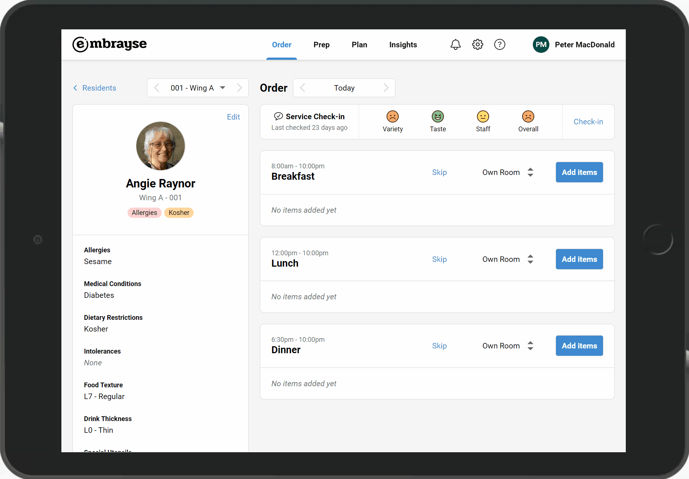
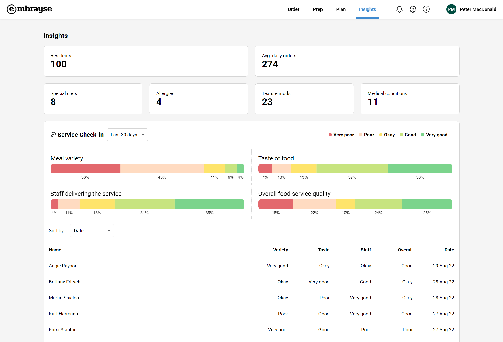
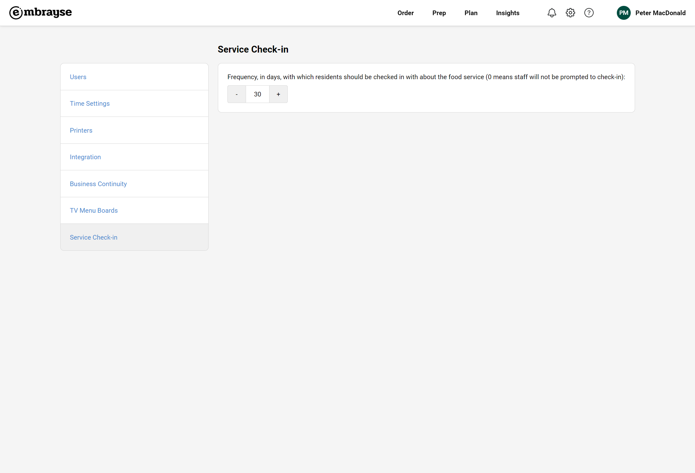
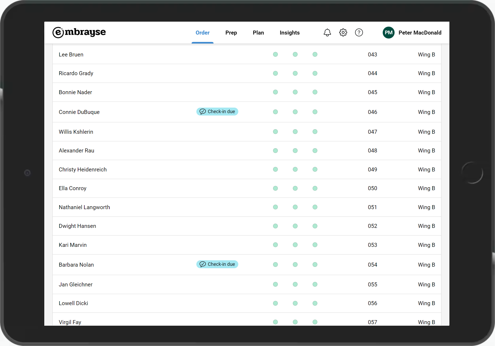
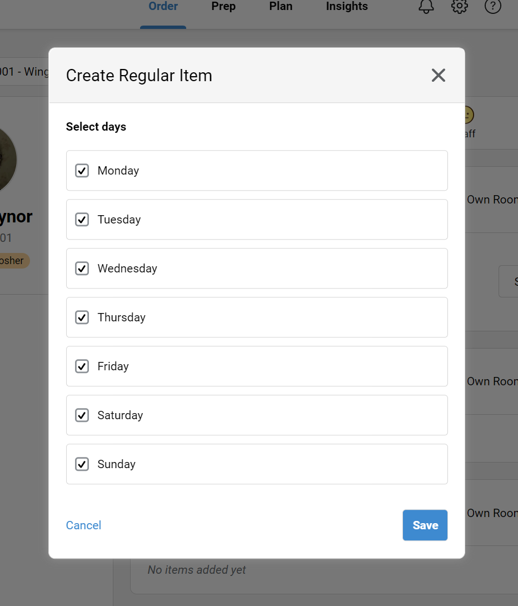

Release 2022.4 – Service check-in
It was clear that whatever feedback method we introduce in Embrayse must be quick and easy while giving you enough information to know where to focus your efforts. Otherwise, staff are discouraged from collecting feedback frequently. That's why the Service Check-in survey is designed to be fast, allowing you to capture residents' sentiments about the variety and taste of food, staff service, and the overall experience.
Service Check-in
As more and more submissions are collected, you can view an aggregate of the residents' feedback, as well as the individual submissions, in the new Insights area.

If you want to take the extra step and ensure that all residents are checked-in with on a regular basis, you can set how often reminders are displayed to staff under Settings.


When a resident is due for a check-in, a badge is displayed next to their name on the resident list.

Regular Order Item Enhancements
Regular order items have been a unique and powerful feature in Embrayse, and we have now taken it one step further, by giving you the flexibility to select which days of the week the item should be automatically ordered on.

Other Improvements and Bug Fixes
- [Released previously] Resident Intolerances & Dislikes field is now just Intolerances. Dislikes should be moved to Notes.
- [Released previously] Resident Notes are now printed on their dockets.
- Fixed: when a regular order item is updated, sometimes future "skipped" dates are lost.
- Fixed: orders for people with Away status do not appear on backup PDFs.
- Fixed: if a server error occurs when saving a resident or meal, the save button becomes disabled completely and a page refresh is required to try again.
Want to see Embrayse in action?